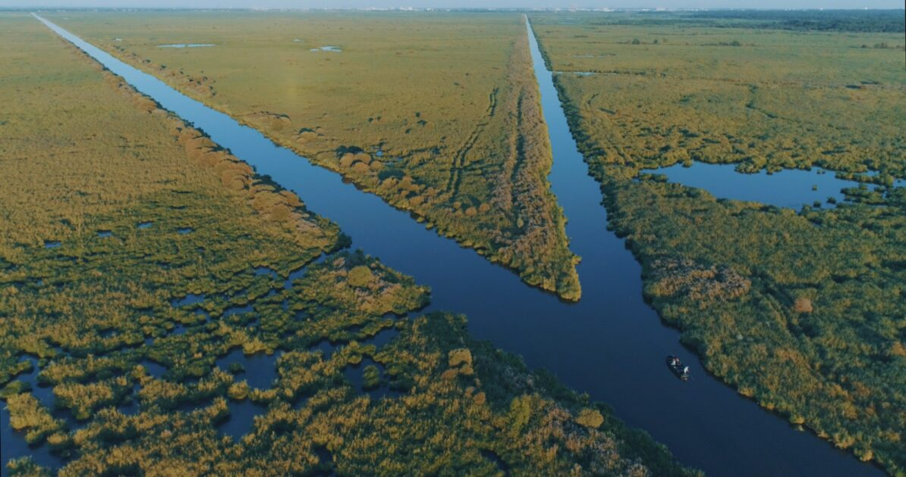
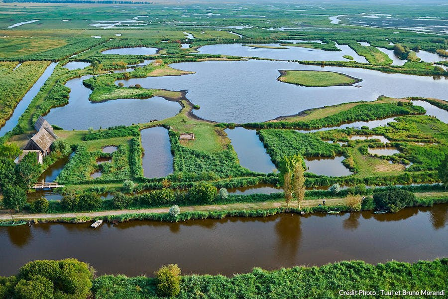
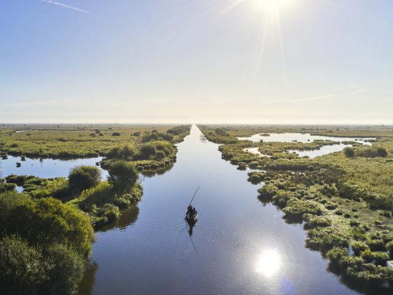
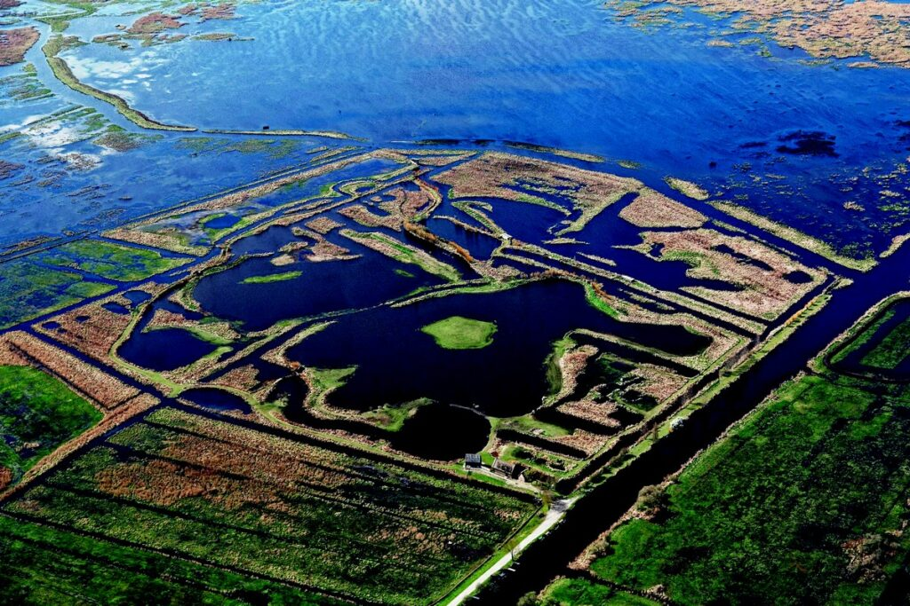

Bière au gingembre
Notre produit phare : une bière artisanale infusée au gingembre frais, fermentation naturelle, brassée en petite série. Recette et déclinaisons à préciser.
Bientôt disponible
🌿 Brassée au cœur de la Brière
Ginger Brière est une bière artisanale au gingembre, née entre les chalands, la brume et les hérons du marais briéron.
De la bière au gingembre à nos accessoires en édition limitée : chaque produit porte l'esprit de la Brière.
Notre produit phare : une bière artisanale infusée au gingembre frais, fermentation naturelle, brassée en petite série. Recette et déclinaisons à préciser.
Bientôt disponibleIllustration héron & roseaux, coton, esprit balade en Brière.
Boutique à venirMotif chaland tissé, pour crapahuter dans les marais tout confort.
Boutique à venirBroderie logo Ginger Brière, pour affronter le soleil sur l'eau.
Boutique à venirTout est parti d'une envie simple : marier le caractère du gingembre à l'âme du marais breton. La Brière, avec ses canaux silencieux, ses chalands qui glissent sans bruit et ses hérons immobiles, est un territoire d'aventure discrète — et une source d'inspiration naturelle pour une bière qui a du caractère.
[Ce texte est un point de départ — remplace-le par votre vraie histoire : qui vous êtes, comment le projet est né, pourquoi le gingembre, pourquoi la Brière.]

Canaux silencieux, chalands et roselières : le décor où naît chaque bouteille.


Un film pour raconter la Brière autrement : ses artisans, ses chalands, sa faune, et la naissance de Ginger Brière.
De la racine au verre, une fabrication artisanale en quatre étapes.
Sélection de racines de gingembre frais pour leur caractère et leur piquant.
Le gingembre infuse lentement pour révéler toute son intensité aromatique.
Une fermentation lente et maîtrisée, sans artifice, pour un goût authentique.
Embouteillage en Brière, en petites séries, prêt pour l'aventure.
Nous sommes basés au cœur du Parc naturel régional de Brière, Loire-Atlantique. [Adresse exacte à ajouter dès que disponible.]